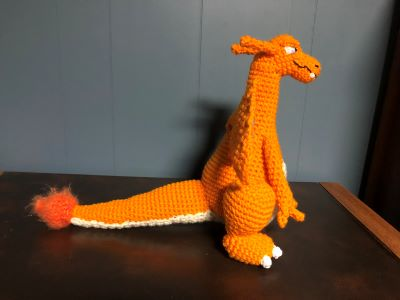
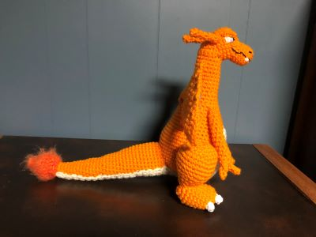

About Me
My favorite creation
My most prized creation is a Charizard I made in the spring of 2020. It took a couple of weeks to make. The pattern was created by Shelly Hedko and can be found on Epic Yarns.
Alterations:
- Eyes and teeth: I took white yarn and embroidered the eyes and teeth into the face. Using some blue and black for the detail on the eyes. This process is similar to how the mouth and nostrils are added.
- Blue Segment of Wings: I used the same pattern for the orange segment of the wings but with a smaller worsted yarn. I sewed the two segments together making sure the metal wire was between them. Every so often I would put a stitch around the wire so it would stay in place.
 

Contact Info
If you would like to contact me you can email me here or at kmilliga@g.emporia.edu
Website Info
Bullet points are Yarn icons created by Freepik - Flaticon.